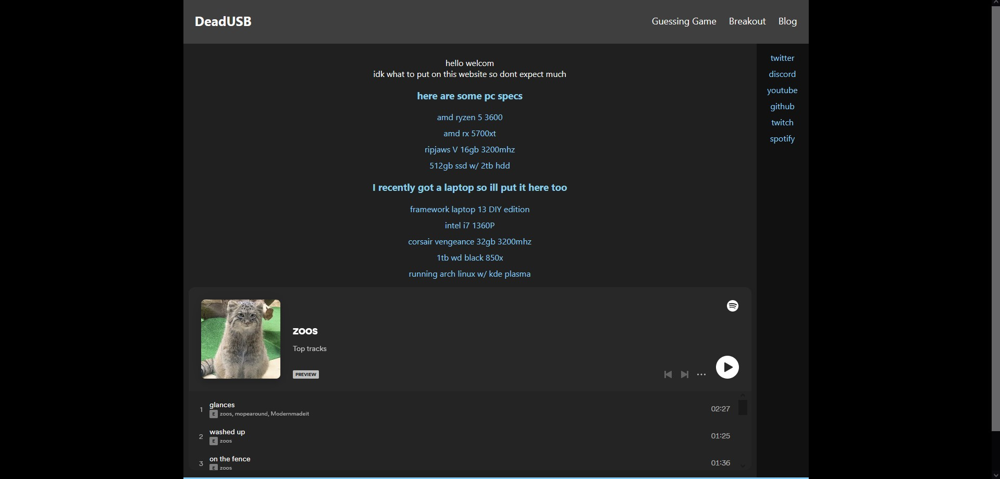

hello once again deadusb.com lackeys
i got another blog post for you all
one may wonder how i pump these out in such quick succession, and to that i suggest you ask your mother this question.
anyways this post is going to be more just me talking about stuff instead of the technicality of the site.
ok another quick overview of this post:
short topics for now but hey, they cant all be winners.
for not running git pull --rebase.
when adding the domain and earlier that day, i had pushed commits to the repository which were small enough changes that i had completely forgotten about.
which is a terrible excuse overall, i should run git pull whenever i need to work on this in the first place.
after constant reminders and ridicule, (aka, like 3 messages and some actually helpful suggestions)
i cracked open the amazing Git Book.
which really cleared things up to be honest. git is really cool
from now on i will make sure to use git responsibly, thank you karthin.
apparently you guys arent so keen on the black bars the site has on pc.
tbh i like them but i do admit they're rather bland.
if i can find something cool to replace them with then ofc ill go for it but for now the site's gonna stay like this.
if u have any opinions just dm me on discord
so going back on these old posts i just want to completely verify whats going on with the site, like a little roadmap
yeah tbh if im going to make a whole game for this site i'd rather broaden my horizons than just remaster a pretty garbage game already on here
so maybe ill make a different game but tbh that requires me finishing a project and waayyyy to lazy to do that
any ideas lmk
i feel like i just kinda glossed over this in the previous post but the blog rework is going to take some time to actually come out since theres quite a bit of things to be adding/considering
this is the one thing i'll guarantee though since blog posts are the only active work being done on this site
that footer, i really dont know what to do with it
sppongy and karthin you mfs need to get a good site up ffs
whatever, i've delayed this post long enough and honestly i didnt even do anything this time
next one will come with actual changes i promise